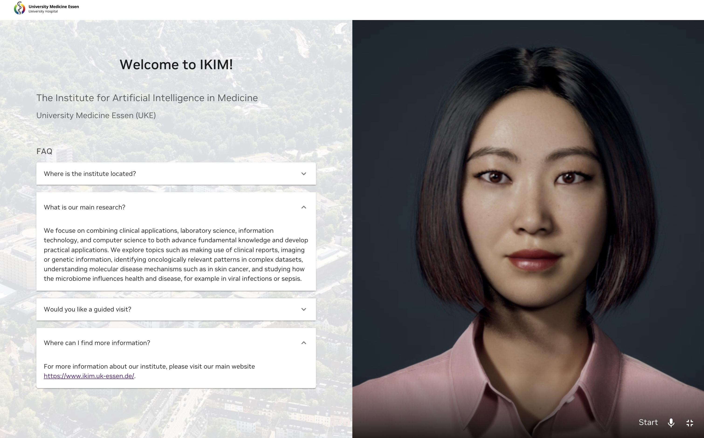

Project Overview
Our project aims to create a photorealistic, AI-powered digital human avatar that can be seamlessly integrated into hospital infrastructures. Designed to sound and feel human through natural speech, gestures, and appearance, the avatar will reduce communication barriers and provide trusted assistance for both patients and staff. We plan to start with patient orientation and first-contact support: by linking the avatar to a hospital knowledge base, it will answer frequently asked questions, guide patients through administrative steps, and provide staff with quick access to relevant information. In later stages, we will expand toward more complex and specialized use cases, identified through structured needs and user analyses with healthcare professionals and patients.
Welcome to IKIM!
As a first implementation, we created an interactive page for our institute's website where we welcome visitors and help them understand aspects of our institute such as its history and the research we conduct. Unfortunately, we are currently unable to directly embed our digital human into this webpage. However, we have provided a video demonstration. Please click on the image below to watch the video and experience our digital assistant - Monika.
